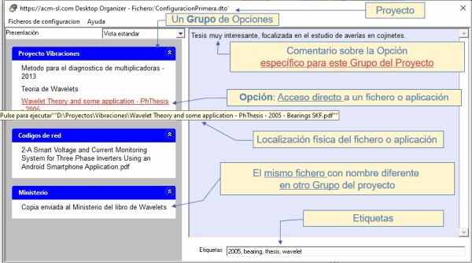
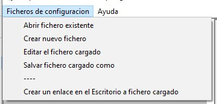
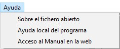
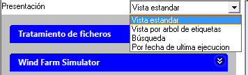
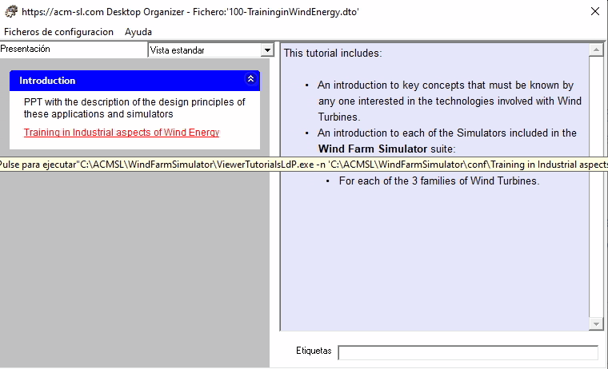

El formulario principal y sus componentes se muestran a continuación:

- En la parte superior se indica el nombre del fichero de configuración que se está usando ("ConfiguracionPrimera.dto" en este caso).
- Contiene dos menus principales:
- Ficheros de Configuración, cuyo despliegue presenta las siguientes opciones, descritas más abajo.

- Ayuda, cuyo despliegue muestra las siguientes opciones:

- El cuerpo del formulario está dividido verticalmente en dos parte:
- A la izquierda, arriba, existe el selector de Presentación , que permite elegir entre las distintas vistas disponibles, que se describen en detalle en Vistas posibles.

- A la parte izquierda abajo está el panel donde ser presentan las Opciones disponibles, accesibles mediante Grupos.
- En la parte derecha se encuentra el panel de Comentario, donde se presenta el comentario asociado a la Opción o el Grupo sobre el que está el ratón en el panel izquierdo. Ver ejemplos en las siguientes figuras.


- En la parte derecha, abajo se encuentra la caja de texto donde se presentan las Etiquetas asociadas con la Opción del panel izquierdo sobre la que está situada el ratón.